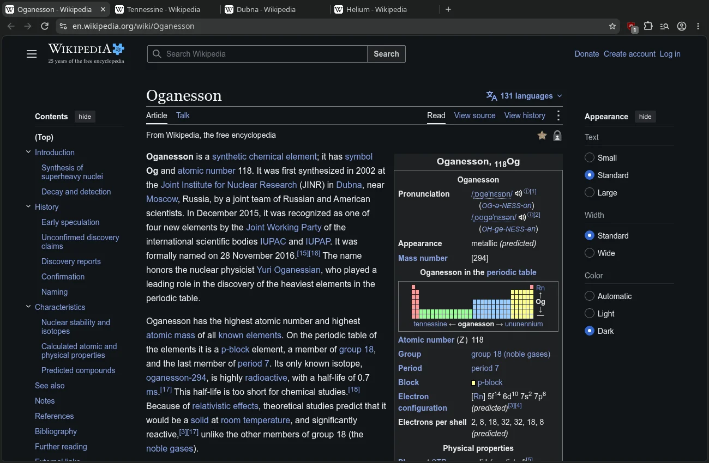
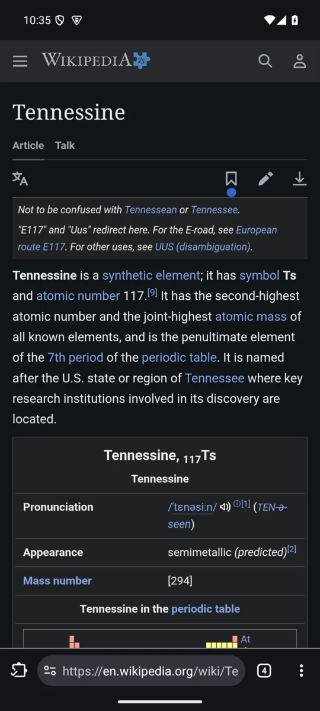

Chromium, made whole for the way I use it.
oganesson on the desktop and tennessine on Android. Both come with full uBlock Origin and Firefox-compatible Sync, and oganesson brings Firefox's tab habits. Google's services stay out unless you switch them on.
Now: oganesson {{og_version}} and tennessine {{ts_version}}, on Chromium {{milestone}}.


Two browsers, built from the same parts
Each one starts from a de-Googled Chromium that someone else maintains well, then adds what an extension can't do. Where an extension does the job well, the extension does it.
oganesson Linux & Windows
Built on Helium, which builds on ungoogled-chromium. Helium's whole patch series applies unchanged; the parts I don't want are dropped or switched off.
- Mouse gestures on every page, internal pages included
- A toolbar where every item moves and hides
- Firefox's tab placement and tab selection after close, or Chromium's, as a preset
- Firefox-compatible Sync: passwords, bookmarks, history, tabs, addresses, cards
- Installed web apps open outside links in your default browser
- Switches that stop saving browsing and download history
tennessine Android
Built on GrapheneOS' Vanadium with Titanium's extension support. Its own features are written for it, with no Helium code inside.
- Chrome extensions on Android, with uBlock Origin installed on first run
- A layout that follows the address bar: put it at the bottom and the menu, suggestions and tab list follow it
- A list-mode tab switcher and the full URL in the address bar
- Page zoom that follows Android's font size
- Firefox-compatible Sync, the same as on the desktop
- Switches that stop saving history
What they look like
Screenshots of the current builds, each set up the way its caption says. Pick one to see it large.


Why not just use…
Each of these is the right pick for someone. Open one for what kept me away. The last one, oganesson's own weak points, is open.
BraveGood if you want ads and trackers gone with no setup at all.
- No mouse gestures
- No middle-click on the tab strip for a new tab
- Toolbar items only show or hide; they don't move
- uBlock Origin installs, but can't uncloak CNAME trackers: Chromium has no DNS API for extensions, so only Shields can
- No way to remove tab close buttons or the sound icon
- Chromium's tab placement, not Firefox's
- Brave Sync, which doesn't work with Firefox Sync
- Rewards, a crypto wallet, Leo AI and sponsored new tab images
ChromeGood if you live in Google's services.
- No mouse gestures
- No middle-click on the tab strip for a new tab
- Toolbar items only pin and unpin; they don't move
- Only uBlock Origin Lite, so no CNAME uncloaking
- No way to remove tab close buttons or the sound icon
- Chromium's tab placement, not Firefox's
- Sync through a Google account, which doesn't work with Firefox Sync
- Gemini, Google services and telemetry on by default
EdgeGood if you're on Windows with a Microsoft account.
- Mouse gestures on every page with a good choice of actions, but only Edge's fixed set of strokes: no custom strokes, rocker or wheel gestures
- No middle-click on the tab strip for a new tab
- Toolbar items only show or hide; they don't move
- Only uBlock Origin Lite, so no CNAME uncloaking
- No way to remove tab close buttons or the sound icon
- Chromium's tab placement, not Firefox's
- Sync through a Microsoft account, which doesn't work with Firefox Sync
- A closed-source interface, so none of it can be patched
- Copilot, telemetry and ads in its news feed
HeliumGood if you want a minimal Chromium with full uBlock Origin, on one computer.
- No mouse gestures
- No middle-click on the tab strip for a new tab
- Only some toolbar buttons hide, and nothing moves
- Tab close buttons hide only with a flag, and the sound icon stays
- Firefox's tab placement only as "next to active"
- No sync at all, and the password manager is removed
- Web Store installs, filter lists and updates go through Helium's own servers
Opera GXGood if you want the gaming look, RAM and CPU limiters and messengers in a sidebar.
- Mouse gestures, but a fixed set you can't change
- No middle-click on the tab strip for a new tab
- Toolbar items only show or hide; they don't move
- uBlock Origin installs, but can't uncloak CNAME trackers: Chromium has no DNS API for extensions
- Chromium's tab placement, not Firefox's
- Opera Sync, which doesn't work with Firefox Sync
- A closed-source interface, so none of it can be patched
- Sponsored speed dials, messenger sidebars, Aria AI and a crypto wallet
VivaldiGood if you want a setting for everything, plus mail, calendar and feeds built in.
- Middle-click on the tab strip fails in a maximized window with tabs on top
- The toolbar editor can't move extension or address bar icons
- No full uBlock Origin since 8.1 dropped Manifest V2, so no CNAME uncloaking
- Vivaldi Sync, which doesn't work with Firefox Sync
- A closed-source interface, so none of it can be patched
- A long feature list, though some features have rough edges, like the tab strip and toolbar gaps above
FirefoxGood if you want full uBlock Origin and Firefox add-ons, and Gecko is fine.
- No mouse gestures on internal pages: add-ons can't run there, and the API that lifts that never reaches AMO
- Tab close buttons and the sound icon go away only with userChrome.css
- Gecko: slower than Blink, and sites are built and tested for Blink first
- Telemetry, sponsored shortcuts and AI features on by default
FloorpGood if you want Firefox with more knobs: workspaces, vertical tabs, gestures.
- Gecko: slower than Blink, and sites are built and tested for Blink first
- A small team on a Firefox fork, so security fixes can arrive after Firefox's
- Many of its features sit on top of Firefox's code, so each Firefox update can break a few until the team catches up. oganesson works the same way on Chromium
ZenGood if you liked Arc and want it on Firefox.
- An Arc-style sidebar layout, with no classic horizontal tab strip
- No mouse gestures on internal pages: add-ons can't run there, and the API that lifts that never reaches AMO
- Gecko: slower than Blink, and sites are built and tested for Blink first
- A small team on a Firefox fork, so security fixes can arrive after Firefox's
oganessonGood if you want Firefox's habits on Blink with full uBlock Origin, and can live with a one-person project.
- Just me, building it for my own use: features change or disappear without notice, and development may stop at any time
- Many of its features sit on top of Chromium's code, so each Chromium update can break a few until they're fixed. Tests cover the main paths, not every one
- New Chromium versions come after Helium has them, and a new milestone waits until tennessine's upstream has it too; security fixes don't wait
- Windows builds are unsigned, so SmartScreen warns, and have no auto-updater. No macOS
- DRM streaming (Netflix, Spotify, Disney+ and the like) needs Widevine, which downloads only after you turn on Helium's services in Settings
- Firefox Sync covers passwords, bookmarks, history, open tabs, addresses and cards, not extensions or settings
- Chrome's extension APIs, not Firefox's: no containers, no tab hiding, and no response filtering, so uBlock Origin's HTML filters don't work
- Full uBlock Origin relies on Manifest V2, which Chromium keeps removing; Helium's patches keep it working for now
- Not privacy-paranoid: it keeps the password manager, Sync and Google search, each yours to skip, and no fingerprinting noise by default
What matters most
These are the features I'd miss most if they went away.
Real uBlock Origin
The full Manifest V2 uBlock Origin, not the Lite version. It includes CNAME uncloaking, so trackers hidden behind a site's own subdomains are blocked too. Filter lists update from uBlock's own sources, not through a browser vendor's proxy.
Firefox Sync, on Chromium
Signs in to Mozilla's sync service, or better, your own self-hosted sync server. Passwords, bookmarks, history, open tabs, addresses and cards move between the two browsers and Firefox itself.
Tabs that behave like Firefox
New tabs open where Firefox would put them. Closing a tab returns you to where you came from. Extensions' tabs follow the same rules. Coming from Chrome? Pick the Chromium preset, or tune each rule yourself. Ctrl+Tab can go in most-recently-used order.
Mouse gestures, natively
Draw to go back, close a tab or reopen one. Because they're built into the browser, they also work on settings pages, the new tab page and the Web Store, where extensions can't run.
One-handed Android
Move the address bar to the bottom and the whole layout follows it: the menu, suggestions and tab list grow up from your thumb. Toasts stay out of the way, above the toolbar.
Extensions on a phone
Titanium's work runs Chrome extensions on Android, and tennessine installs uBlock Origin automatically on first run, with no developer mode and no extra prompts.
Nothing phones home
No Google services and no browser-vendor services by default, and Helium's own service proxy is off too. Crash reports and component downloads stay off until you turn them on. What does connect: installing and updating extensions from the Chrome Web Store, and on Linux downloading spellcheck dictionaries, talk to Google, uBlock Origin's filter lists update from uBlock's own sources, tennessine downloads uBlock Origin once on first run and checks it against a pinned checksum, and updates come through your package manager or F-Droid.
Google features as opt-ins
Translation (on-device or Google's), push messages from closed sites, casting and every AI feature have their own switches in one settings section, all off by default.
A password manager you keep
Some privacy browsers remove the built-in password manager; I keep it. It syncs through Firefox Sync, and you can turn off saving in one switch.
How they compare
Compared with the browsers people argue about most: on the desktop also Edge, Helium, Vivaldi, Opera GX and the Firefox-based Floorp and Zen, on Android also Cromite, Edge, Opera, Samsung Internet, Vanadium, Vivaldi and IronFox. Blink browsers come first, then Gecko, each in alphabetical order. Green means the browser has it, on by default or as a setting; most of the others can come closer with extensions.
| Feature | oganesson | Brave | Chrome | Edge | Helium | Opera GX | Vivaldi | Firefox | Floorp | Zen |
|---|---|---|---|---|---|---|---|---|---|---|
| Blink enginefaster, and what sites are built and tested for first | yes | yes | yes | yes | yes | yes | yes | noGecko | noGecko | noGecko |
| Full uBlock Origin (Manifest V2)not the reduced "Lite" version | yesbuilt in | partlyown blocker; MV2 by opt-in | noLite only | noLite only | yesbuilt in | yesadd-on | partlyown blocker; MV2 gone | yesadd-on | yesadd-on | yesadd-on |
| CNAME uncloakingblocks trackers disguised as the site's own subdomain | yes | partlyown blocker only | nono full uBlock | nono full uBlock | yes | nono DNS API | nono full uBlock | yes | yes | yes |
| Firefox-compatible Syncincl. a self-hosted sync server | yes | noBrave Sync | noGoogle account | noMicrosoft account | no | noOpera Sync | noVivaldi Sync | yes | yes | yes |
| Containersseparate cookies and logins per tab group | no | yes | no | no | no | no | no | yesextensions can extend them | yes | yes |
| Firefox's extension APIscontainers, tab hiding, tab-strip menus, response filtering for uBlock Origin's HTML filters | noChrome's APIs | no | no | no | no | no | no | yes | yes | yes |
| Built-in password manager | yes | yes | yes | yes | noremoved | yes | yes | yes | yes | yes |
| No vendor or Google services by defaulttelemetry, proxies, crash uploads | yes | partlyown services | no | no | partlyown services, on consent | no | partlyusage ping | notelemetry on | partlyMozilla services | partlyMozilla services |
| Firefox tab placement & close selection | yesdefault preset | no | no | no | partly"next to active" | no | yesseveral settings | yes | yes | yes |
| Ctrl+Tab in recently-used order | yes | yes | no | no | yes | yes | yes | yes | yes | yes |
| Native, configurable mouse gesturesalso on internal pages | yes | noextensions only | noextensions only | partlyfixed strokes; no rocker or wheel | noextensions only | partlyfixed gestures, rockers too | yes | noextensions only; an experiment API on Nightly | yesoff by default | noextensions only |
| Every toolbar item movable and hideable | yes | partlyshow or hide | partlypin only | partlyshow or hide | partlysome buttons | partlyshow or hide | partlyextension & page icons fixed | yes | yes | partlysidebar layout |
| Middle-click the tab strip for a new tabin every layout, maximized included | yes | no | no | no | no | noPresto Opera had it | partlynot maximized, tabs on top | yes | yes | yesopens the address bar for a new tab |
| Open-source user interface | yes | yes | partlyChromium is; Chrome isn't | no | yes | no | no | yes | yes | yes |
| Switch to stop saving historynever written, not cleared later | yesbrowsing & downloads | no | no | no | no | no | noonly clears on exit | yes | yes | yes |
| No AI assistant unless you turn one on | yes | noLeo | noGemini | noCopilot | yes | noAria | yes | partlyFirefox's AI features on | partlyFirefox's AI features on | partlyFirefox's AI features on |
| No sponsored tiles, rewards or wallet | yes | no | yes | nonews feed ads | yes | nosponsored dials, wallet | partlypartner speed dials | nosponsored shortcuts | partlysponsored shortcuts | yes |
| Feature | tennessine | Brave | Chrome | Cromite | Edge | Opera | Samsung Internet | Vanadium | Vivaldi | Firefox | IronFox |
|---|---|---|---|---|---|---|---|---|---|---|---|
| Blink enginefaster, and what sites are built and tested for first | yes | yes | yes | yes | yes | yes | yes | yes | yes | noGecko | noGecko |
| Full uBlock Origin | yesinstalled on first run | partlyown blocker | nono extensions | partlyown blocker | noLite only | partlyown blocker | partlyblocker add-ons only | partlyown blocker | partlyown blocker; MV2 gone | yesadd-on | yesadd-on |
| Extensions | yesChrome's | no | no | no | partlyEdge's | no | partlySamsung's | no | yesChrome's | yesFirefox's | yesFirefox's |
| Firefox-compatible Sync | yes | no | no | no | noMicrosoft account | noOpera Sync | noSamsung account | no | noVivaldi Sync | yes | yes |
| GrapheneOS hardening patchessome take full effect only on GrapheneOS itself | partlyJIT on by default | no | no | no | no | no | no | yes | no | no | no |
| Bottom address barwith the menu, suggestions and tab list following it | yes | partlybar only | partlybar only | partlybar only | partlybar only | – | partlybar only | partlybar only | partlybar only | partlybar only | partlybar only |
| Switch to stop saving historynever written, not cleared later | yes | no | no | yeshistory days: never | no | – | no | no | noonly clears on exit | noonly clears on exit | noonly clears on exit |
| No vendor or Google services by default | yes | partlyown services | no | yes | no | noown services | no | yes | partlyusage ping | notelemetry on | yes |
| Installs from an F-Droid repository | yes | no | no | yesown repo | no | no | no | noGrapheneOS only | no | yesFennec | yesown repo |
| Text wrap on desktop sitesparagraphs reflow to the screen width | no | no | no | no | no | yes | – | no | no | no | no |
As of October 2026, in each browser's standard release, checked against shipped default prefs, source and official docs where possible. "Firefox" on Android includes Fennec, F-Droid's build of it. Vanadium ships only on GrapheneOS. – means not checked. Kiwi, once the Android browser for extensions, was discontinued in 2025. Gesture extensions can't run on internal pages or the extension store in any browser; on Firefox, an experiment API lifts that only on Nightly, Developer Edition and unbranded builds, so such extensions never reach AMO. When another browser does something well I usually bring it into oganesson, which is why its column is mostly green; the rows it loses stay in. Corrections are welcome.
Private and secure by default, not paranoid
Out of the box, nothing talks to Google and nothing reports to me, and the defaults are private and secure. When you want some convenience, open up only what you need, one switch at a time. If you don't trust a feature, don't use it.
What each feature does out of the box:
Updates: both browsers on one Chromium
The two browsers share patches, so they move together. Helium and Vanadium each release at their own pace, and these rules decide when I follow.
Same milestone
A new release within the current Chromium milestone: take it now. The two browsers may run different releases of one milestone.
New milestone
Wait until Helium and Vanadium both have it, so the shared patches move once.
Zero-day
An exploit in the wild: update at once. If an upstream is late, I move the Chromium version myself and fix its patches.
Stale
If Chrome stable has been ahead for over 7 days, catch up.
Highly volatile. This is a personal project. Features change or disappear without notice, updates can break things, and development may stop at any time. Use it knowing that.
Where the names come from
None of it was planned. Each name followed from the one before.
Helium
When I started, Helium was the only Chromium with full uBlock Origin and CNAME uncloaking, so that's where I began. Firefox Sync came next, so the desktop could talk to Firefox on my phone.
oganesson
Helium sits at the top of group 18 in the periodic table, and oganesson at the bottom. Helium is the lightest noble gas; oganesson is the heaviest and falls apart in under a millisecond. Not lightweight, and volatile: it checks out.
tennessine
The Android browser isn't oganesson on a small screen, and a phone can't give the same experience as a desktop, so it's a separate product with its own name: element 117, right next door.
dubna
Then the shared core needed a name. By luck, both elements were first made in the same place: Dubna, at the Joint Institute for Nuclear Research. Everything came together.
Try them
oganesson for Linux and Windows, tennessine for Android, both on Chromium {{milestone}}.